概述
基础插件
如果要从零开始设计 顺序记忆 游戏，需要下图的插件：
{width="5.768055555555556in" height="2.2444444444444445in"}
另外，需要一些辅助的插件：（可加可不加）
 {width="5.768055555555556in"
height="1.9194444444444445in"}
{width="5.768055555555556in"
height="1.9194444444444445in"}
注意，该文档只详细说明 整体设计思路 和 解谜方法 。
对于如何 具体使用变量数组 ，需要去看看："关于变量数组核心.docx"
基础配置
这个小游戏需要的地图非常小，可以放在很小的房间中作为解谜。
具体注意示例下面的地方：
1）公共事件
公共事件包含 游戏结束 和 播放颜色 两个处理动作。
（由于这两个公共事件被重复调用的次数比较多，所以从事件中分离出来作为公共事件）
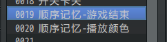{width="2.341666666666667in" height="0.5892935258092739in"}
2）开关
游戏流程中，需要分别控制： 游戏进行标记、任务正在播放标记、游戏通关标记。
对应到开关后，表达出来的意思会有些不太一样。
（比如，"播放完毕"开关 充当 关卡管理器的 独立开关的功能，但在其他地方可能会用到，用于判断是否正在 播放颜色。）
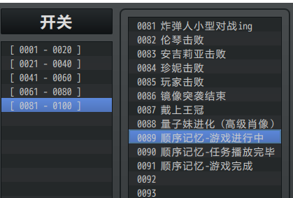{width="2.7in" height="1.8240463692038495in"}
3）变量
变量用到了三个，主要用于数值控制： 关卡、当前颜色、当前索引。
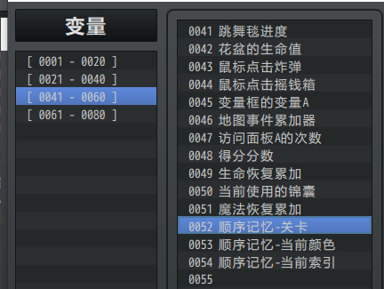{width="2.716666666666667in" height="2.0425306211723533in"}
4）地图事件
所有解谜相关的事件 ，都在地图"设计-顺序记忆"中。
这里主要需留意地图中名为 关卡管理器 的事件，该事件控制游戏的整体流程。
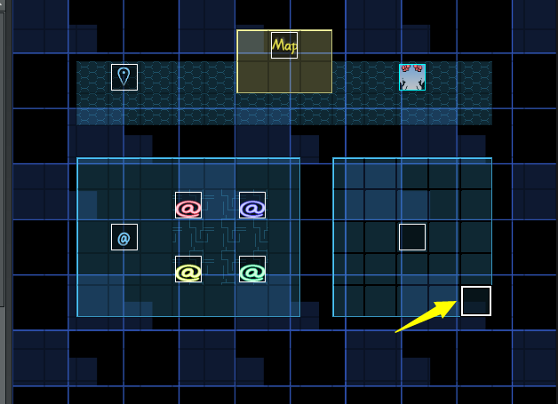{width="4.709722222222222in" height="3.414067147856518in"}
5）插件配置
该解谜用到了7个数组，一个用于表示当前关卡的数组，和6个自定义设计好的颜色顺序数组。
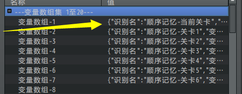{width="4.708333333333333in" height="1.8306003937007873in"}
\
顺序记忆-谜题设计
设计简介
1）游戏规则
游戏有六个关卡。
一共有四个颜色的开关可以踩。
关卡开始后，播放一个颜色顺序，只播放一次。
播放完毕后，玩家需要按照播放的顺序踩身旁的脚踏开关。
踩对才能通关，踩错直接失败。
玩家在游戏中可以意会到游戏规则，可以不作详细的规则说明。
2）难度分配
颜色播放速度的快慢 能影响关卡难度。
颜色顺序的颜色总个数 能影响关卡难度。
变换颜色的位置能够干扰玩家的视线，从而增加难度。
另外，这里不建议用 完全随机的 颜色顺序，这样设计将变成"纯粹考玩家的反应能力"，对于大多普通玩家会吃不消。
3）禁用能力
禁跳跃。
禁炸弹。
4）卡关注意事项
该解谜可用"离开关卡"重置游戏，且不存在阻塞事件，不会卡关。
游戏流程
游戏流程分为4个大类：
1.游戏开始前关卡准备
2.播放当前关卡的颜色
3.玩家踩指定颜色的开关
4.关卡失败/关卡完成
每个关卡都包含这 四个固定流程 ，完成关卡后，进入下一个关卡。

在开始关卡前，还需要准备 游戏开始 和 游戏结束 两个流程。
游戏开始：指进行游戏的各项数据初始化操作，比如暂停背景音乐，状态切换。
游戏结束：指恢复开始游戏前的各项数据操作，结束分三种情况：完成关卡结束、模仿错误结束、离开关卡结束。

关卡管理器事件中，设置了 关卡0 和 关卡7 两个额外的控制流程，就是为了实现 "游戏开始"流程 和 "游戏结束-完成关卡结束"流程。
"模仿错误结束"的流程，放在每个颜色脚踏开关中，踩错就立即结束。
"离开关卡结束"的流程，就放在玩家身旁，可以随时离开关卡。
颜色定义与识别
这里把四种颜色定义为一个数字，存放在数组中：
1红， 2蓝， 3黄， 4绿
1）播放颜色 指令写法
需要显示目标颜色时，通过数字比较，修改 颜色事件 的独立开关，即可实现颜色显示。
见公共事件"顺序记忆-播放颜色"和 地图中的事件"颜色播放事件"。
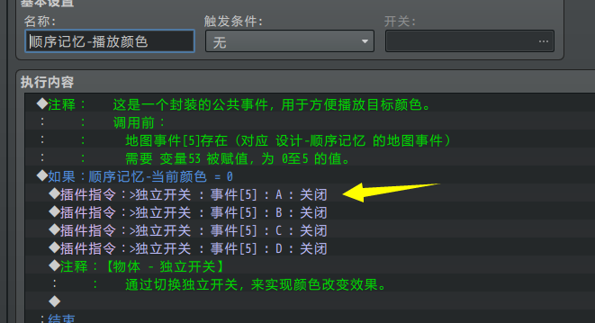{width="3.775in" height="2.0520253718285213in"}
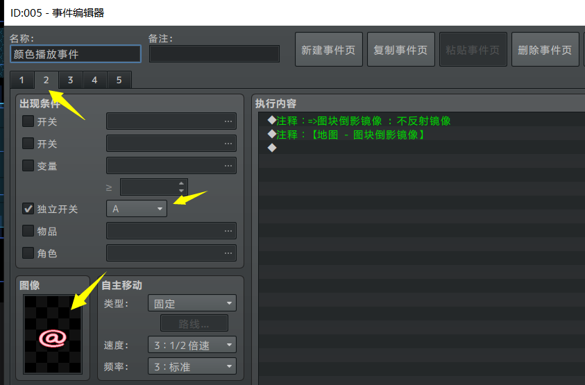{width="3.734722222222222in" height="2.4590890201224846in"}
在 关卡管理器 的事件中，循环地把 数组 中的值依次赋值给 变量53（顺序记忆-当前颜色），然后调用公共事件控制 颜色事件 显示。即可 播放当前关卡的颜色顺序。
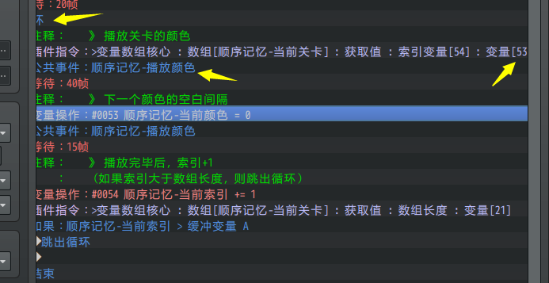{width="4.058333333333334in" height="2.0902416885389328in"}
2）玩家选择颜色 指令写法
玩家操作时，当前颜色和索引清空。
索引这里作为玩家按键的一个顺序值进行流程。
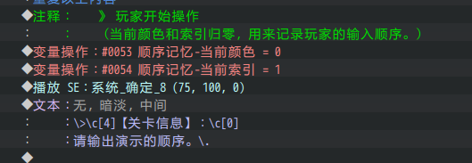{width="4.5in" height="1.5590015310586176in"}
四个开关分别对应四个数字：1红， 2蓝， 3黄， 4绿。
玩家踩中一个颜色后，
去索引查询 当前颜色，当前颜色和 开关数字 的匹配，就算正确；否则就算错误。
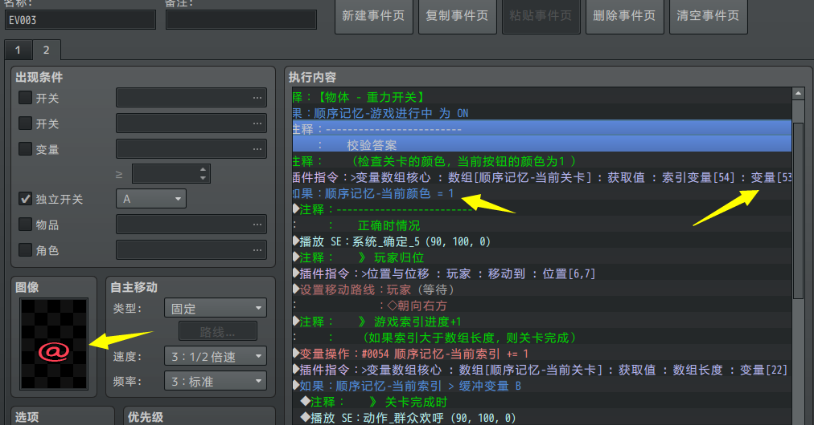{width="5.391666666666667in" height="2.8217639982502187in"}
正确后，索引+1，进入下一个颜色输入。
如果索引长度超出数组长度，说明颜色全部输对了，那么就进入下一个关卡。
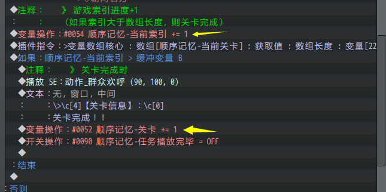{width="4.508333333333334in" height="2.2487379702537185in"}
难度调整
1）修改颜色顺序
由于使用了 变量数组 插件，数组中可以存放很多预设的数字数据。
因为 播放颜色 和 玩家选择颜色 都基于 "当前关卡"数组的长度。
所以数组中可以放任意个数字，而不需要修改任何事件。
（关于变量数组更多用法，可以去看看"关于变量数组核心.docx"）
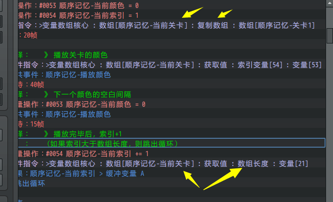{width="4.584722222222222in" height="2.7891404199475067in"}
因此，直接修改数组内容就可以自定义各个关卡的颜色顺序了。
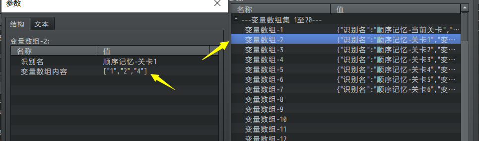{width="5.283333333333333in" height="1.5552307524059492in"}
2）修改播放快慢
要修改播放的速度，在关卡循环播放中，修改 等待 时间即可。
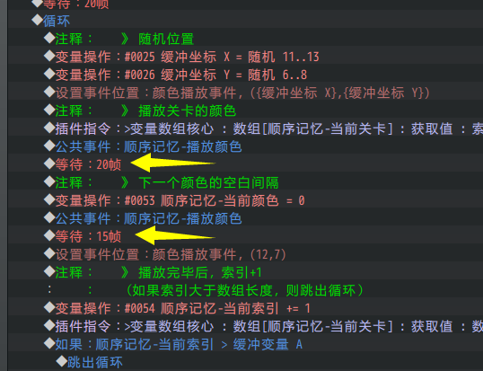{width="3.683333333333333in" height="2.8282742782152233in"}
播放颜色的流程如为：
先根据索引播放颜色，然后空出15帧的空白时间，再索引+1，循环执行。
空白时间的流程 用于显示出 "蓝蓝蓝" 这种相同颜色的顺序关系。
设计建议
1）设计细节
这个游戏规则简单的不能再简单了，模拟目标按一次就可以了。
如果作为一个云玩家，这种小游戏实在太蠢了，完全没有可玩性。
但是关键就在这里，当你真正意义上进行这个小游戏时，你的记忆不一定能跟上颜色播放的节奏，尤其是后面的关卡，越来越快。
为了通关，不服输的你被迫寻找其他方法：背顺序、用笔记忆、录视频。
寻找通关方法的过程，就是这个小游戏的魅力。
2）关卡安排建议
如果你需要在你的游戏中添加该解谜类型，
关卡建议最多三关，难度最大到第四关，可作为 支线或主线谜题 。
第五关和第六关的设计纯粹是为了难而难，所以最多作为 小支线或奖励成就 即可。
另外，此解谜游戏的设计 不要 在你的游戏主线中出现第二次，忌重复的玩法。
顺序记忆-谜题解法
背顺序
如果你记忆力不错，重来几次，完全不是问题。
作者我会背顺序，通常会将其转成旋律顺序，比如：
红红绿蓝红红黄绿，划分为4个拍子一组： 红红绿蓝 和 红红黄绿。
红绿蓝红绿红绿蓝绿蓝，划分为5个拍子一组： 红绿蓝红绿 和 红绿蓝绿蓝。
但是，这个方法仅限于容易找节奏的顺序，如果顺序中规律难找，那么就什么都记不了。
录视频
这个就不多说了。
由于游戏的要求给答案的时间并没有被限制，所以可以慢慢倒带去看要按的按钮。
方位记号法
在电脑面前准备纸和笔，由于地形是固定的正方形，所以非常适合快速标记。
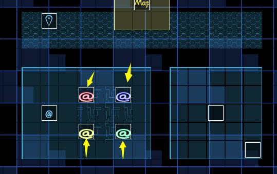{width="3.7in" height="2.333085083114611in"}
先画好方格。
{width="3.225in" height="1.054047462817148in"}
如果显示的是红色开关，就画一小竖。
{width="3.2666666666666666in" height="1.0676662292213472in"}
以此类推，看到什么开关，快速反应画上一小竖。
{width="3.314604111986002in" height="1.0833333333333333in"}
这样能够尽可能在短时间内写出全部顺序。